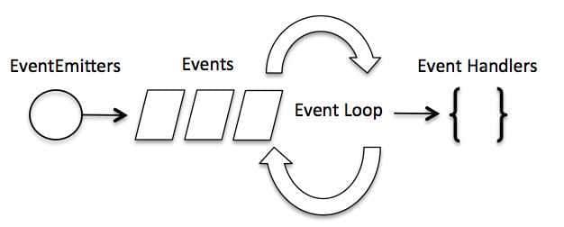

回调函数
如果看见某个函数定义长下面这样👇那它就应该是个带回调的函数。这类的函数一般为js内置，在调用的时候都是作为一个新线程运行的。
1 | function some_function(param1,param2,callback){} |
callback里面写上一个自己定义的函数函数，例如
1 | function another_function(err,data){} |
然后调用
1 | statement1 |
那么some_function会和statement2并行执行，some_function执行完后就会调用another_function然后给another_function传两个个参数err和data。nodejs中带回调的函数都把错误信息作为回调的第一个参数，返回的数据作为第二个参数。回调函数another_function也将是并行执行的。
事件循环
引入模块👇创建对象👇
1 | var events = require('events'); |
把某个事件'eventName'绑定到某个函数eventHandler上
1 | eventEmitter.on('eventName', eventHandler); |
然后就可以触发事件了👇
1 | eventEmitter.emit('eventName'); |
触发事件的内部机制是？

事件循环👆每次eventEmitter.emit都会有一个事件名称（‘eventName’）入队列，在队列的另一端是一群处理函数（eventHandler）在不断从队列中取事件进行处理。
eventEmitter还有这些功能👇
1 | addListener(event, listener) |
继承 EventEmitter
大多数时候我们不会直接使用 EventEmitter，而是在对象中继承它。
包括 fs、net、 http 在内的，只要是支持事件响应的核心模块都是 EventEmitter 的子类。
为什么要这样做呢？原因有两点：
具有某个实体功能的对象实现事件符合语义， 事件的监听和发生应该是一个对象的方法。
JavaScript 的对象机制是基于原型的，支持部分多重继承，继承EventEmitter 不会打乱对象原有的继承关系。
函数or类？
- 接下来我要说的事，你们千万别害怕
- 放心，我们是专业程序员，我们不会怕，你请说
- 我刚才，在express源码里面看见几个类成员被定义在了一个函数上面👇
1 | var proto = module.exports = function(options) { |
- 类成员被定义在函数上面是什么类
- 不是什么类！是那种一半函数一半类的奇葩变量！
- 画画画👇
1 | ()=>{} |
- 不是函数，有成员变量的！
- 画画画👇
1 | function R()={ |
- 就是那种，又能当函数，又能当类用的，那种奇葩变量
- 哈哈哈
- …
函数当类用，原型模式真是编程语言界一朵奇葩。
在循环里面用匿名函数
笔者写中间件调用链被逼无赖写出了如下代码👇
1 | function next(f){f()} |
那么请问，这段代码输出什么？
是123456789加一个I’m the last吗？
不！是！
它！居然！输出了！栈溢出！
原因居然是！fun和call相互递归！
似乎匿名函数变量并不能和普通变量等同。
想要实现像上面那种函数烤串，正确的做法是每一层都给一个单独的变量👇
1 | function next(f){f()} |